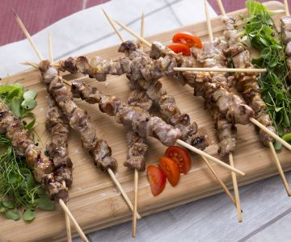
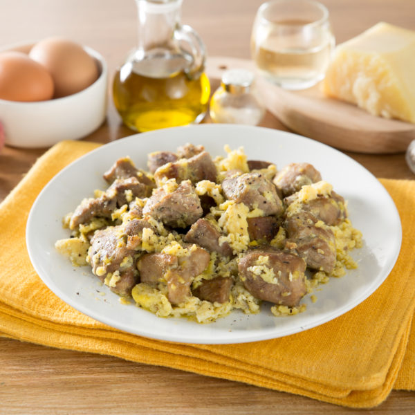
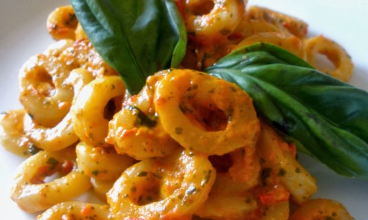
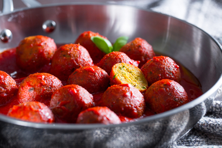
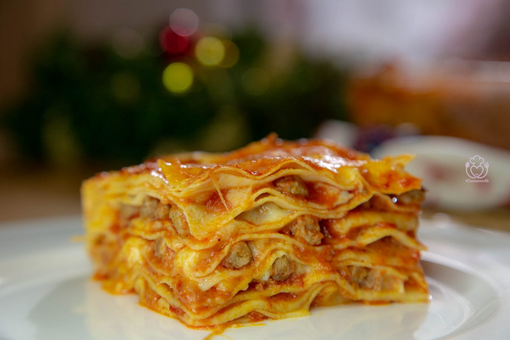
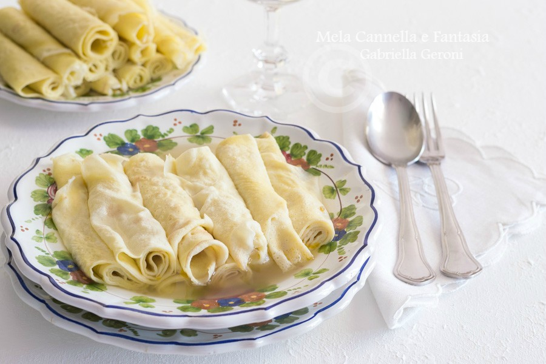
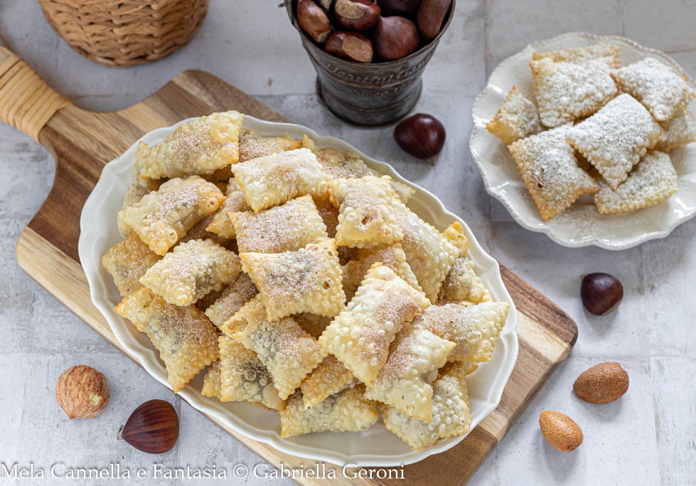

Il timballo di scrippelle alla Teramana è una ricetta tipica abruzzese che si realizza per le ricorrenze importanti, come ad esempio per il pranzo di Natale o di Pasqua.

Le Scrippelle Mbusse sono un piatto tipico abruzzese, più precisamente del Teramano.
Sono delle Crespelle, abase di uova, farina e acqua, si prepara una pastella fluida e vengono cotte in padella pochi minuti per lato, una volta cotte e riempite di formaggio, si impiattano versandoci del brodo sopra.

Li Cagiunitt sono un antico dolce abruzzese, li chiamano anche Calcionetti o Caggionetti.
Sono dei piccoli dolcetti di pasta friabilissima a base di farina, olio e vino, con un ripieno che può variare dalla cioccolata alla marmellata di ogni tipo, per poi essere fritti in padella in pochi minuti.